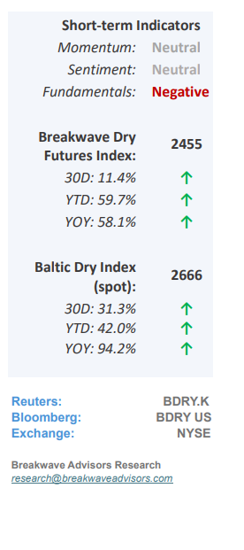
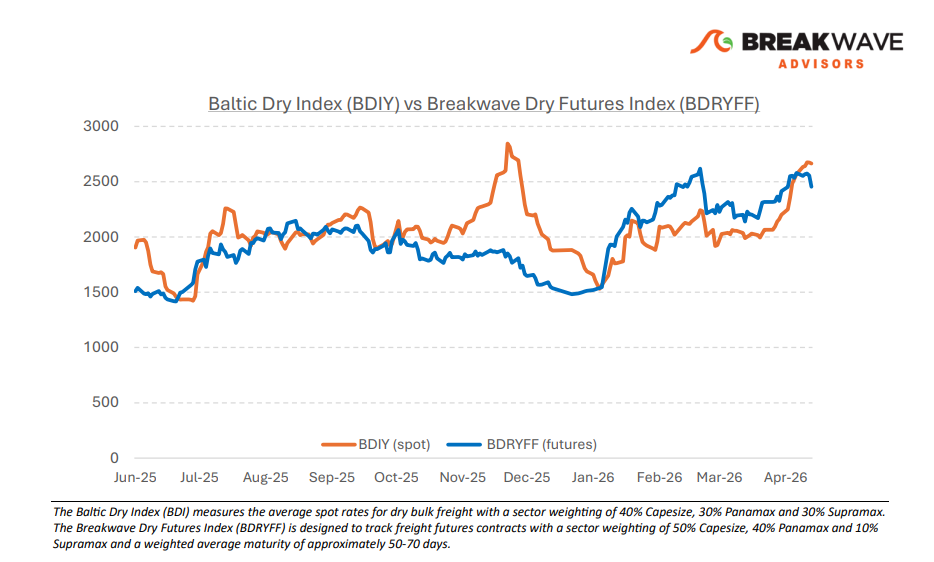
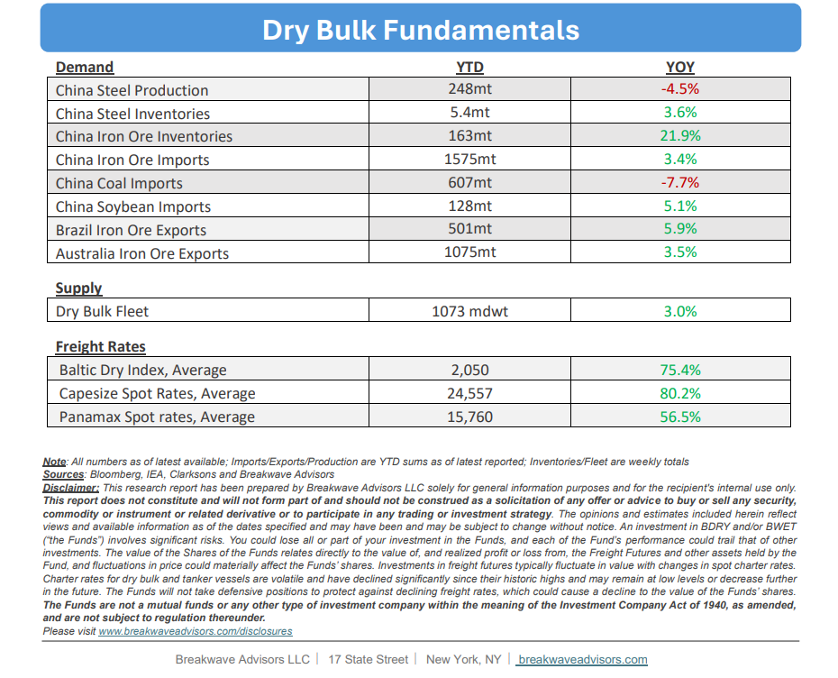

•Capesize Spot Rate Volatility Collapses to Multi-year Lows –Despite maintaining healthy absolute price levels across all asset classes, the dry bulk shipping sector, historically one of the most volatile commodity markets, is currently experiencing asignificant collapse in volatilityto levels not seen since 2018. Mirroring the behavior of iron ore, which has traded within an unusually tight range for over a year now, dry bulk spot rates and freight futures have lost the characteristic "spark" of outsized daily movements. This period ofrelative tranquilityis particularly striking given the backdrop of an unprecedented global energy shock and extreme volatility in neighboring tanker markets. We attribute this uncharacteristic stability primarily to ahighly evolved freight futures market, wherewell-hedgedparticipant portfolios have established an equilibrium that currently dominates market sentiment through year-end. However, we believe that this perceived isolation from broader macroeconomic forces is misleading: economic risks are currently at their highest since the pandemic, particularly as emerging markets and vulnerable Asian economies face an impending shock. While the dry bulk market remains deceptively calm,we do not share the prevailing optimismthat the sector can remain insulated from these intensifying global economic headwindsdespite misleading commodity pricesignalsthat mainly have to do with supply issues rather than promising demand.

•Macro Risks Dominate, We Now Expect a Significant 2H Asia Slowdown– The currentunprecedented oil supply crisishas yet to manifest fully within the real economy; however, its impending impact suggests a period of significant volatility and decelerating growth across several global regions. While the United States remains relatively insulated due to its robust technology sector, reduced reliance on energy imports, and comprehensive domestic oil infrastructure,Asian economies—excluding China— are increasinglyvulnerableto a substantial economic shock that could precipitate an outright recession. China maintains a degree of isolation through its vast strategic reserves and proactive export bans on oil products designed to prioritize domestic stability. Conversely, Europe is expected to face considerable headwinds from elevated energy costs, likely resulting in stagnant economic growth. Thisbroader slowdown is particularly concerningfor the dry bulk shipping sector, as the anticipated growth in iron ore demand within nonChinese Asian markets was expected to drive overall performance this year especially given the anticipated negative contribution from coal trade. Given these factors, wemaintain a cautious outlookon demand growth for economically sensitive dry bulk shipping in the second half of the year. We caution against extrapolating current high spot rates into the future, as the freight futures market may be overestimating their resilience in the face of cooling global demand.
•Our Long-term View– The last few years have been characterized by increased geopolitical uncertainty. Going forward, we expect such events to continue to affect global trade and have a meaningful impact on effective vessel supply. Combined with the potential for a multi-year cyclical rebound in China’s economic activity following the recent economic turmoil, dry bulk shipping should experience higher volatility on top of a secular tightness driven by stable bulk commodity demand and rather steady fleet growth.


Subscribe: